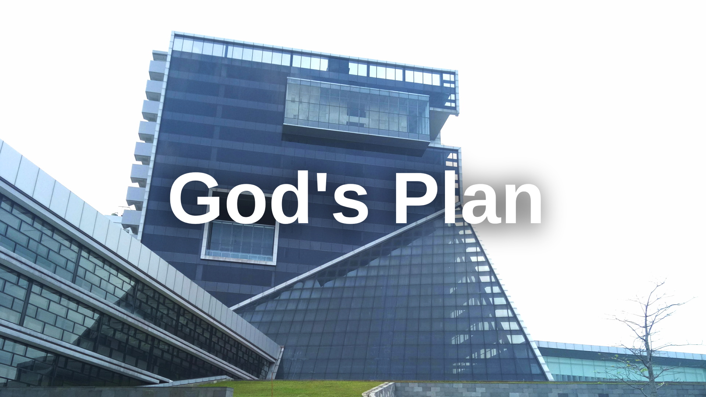

Is It the Answer?
August 4, 2023
By Wicaksono Hanif Supriyanto
Gue telah menemukan permukaan kembali setelah terseret arus, tergulung ombak dan tenggelam dalam dasar lautan. Beberapa bulan berikhtiar, bertawakal dan bermuhasabah, sepertinya cukup bagi gue untuk bisa menemukan waktu yang tepat untuk kembali, sebab ada banyak catatan untuk diceritakan dan segudang pengalaman untuk dibagikan.
Ratusan kata dalam doa sudah dilangitkan. Sepertinya, ini jawaban dari Allah SWT. Semua tentang takdir hari ini, gue rangkum dalam Catatan Mingguan Hanif episode 11.
Kalau kalian lihat beberapa artikel gue sekitar 5 bulan ke belakang, cerita gue ga jauh-jauh soal perkuliahan dan perintilannya. Awalnya seru, tapi lama-lama jenuh juga ceritanya. Sekarang udah waktunya kuliah, tapi masih ada sisa cerita kemarin. Makanya sekalian aja gue ceritain sebelum ceritanya jadi basi.
Gue mulai dari latar belakangnya dulu, jadi orang tua gue menerapkan aturan untuk kuliah S1 hanya boleh di sekitaran Jakarta. Kenapa ga boleh ke luar kota? Alasannya simple tapi punya maksud yang dalam kalau gue pikir-pikir. Alasan tersebut antara lain adalah sisa waktu bersama keluarga, komunikasi, kesehatan, kemudahan logistik, kemudahan transportasi dan sebagainya. Beberapa hal penting ini gak bisa semuanya terceklis apabila gue memilih kuliah di luar kota (selain di sekitaran Jakarta).
Nah, cukup latar belakangnya. “Terus pilihannya apa aja kalau kuliah di dalam kota?” Percaya atau ngga, gue cuma memilih UI sebagai satu-satunya destinasi PTN dengan jurusan IT (ilmu komputer, sistem informasi atau teknik komputer). Itupun gue cuma mau yang reguler. “Trus kenapa ga pilih yang non-reguler Nif?” Alasannya sederhana aja, sebenernya untuk ukuran PTN, kami kurang sreg dengan biaya non-reguler itu. Trus cadangannya apa Nif? Nah balik lagi ke peraturan orang tua, jikalau gue ga berhasil tembus UI maka alternatifnya adalah PTS, PTS itu adalah Universitas Gunadarma. Kalau ditanya, “Lho Kenapa Gunadarma Nif?” Alasannya adalah karena ayah gue seorang dosen di universitas tersebut. Gue mencadangkan Program Studi Teknik Informatika di Gunadarma apabila gue ga lolos masuk UI dengan salah satu jurusan yang disebut di atas. Lagi pula secara akreditasi, keduanya Identik. Ibarat, untuk apa jauh-jauh kalau apa yang gue cari udah ada di depan mata?
Simplenya, “ya.. Kalau ngga UI ya Gunadarma,” begitulah tradisi yang selalu dikatakan oleh kedua orang tua gue kepada semua anaknya. Kedua kakak gue sudah mengikuti tradisi tersebut (walaupun dengan jurusan yang berbeda) jauh sebelum gue, jadi gue akan mengikuti tradisi yang sama lagi. Meskipun algoritma tersebut terlihat mudah, selalu ada tekanan untuk bisa tembus PTN pada diri gue. Pada saat tekanan itu hampir mematahkan mental, keluarga gue selalu bilang, “You’ve got nothing to lose Hanif!”
Segala upaya dilakukan untuk masuk UI, hingga tes terakhir yaitu SIMAK. Tapi nyatanya takdir berkata lain, pada akhirnya, cadangan terbaik itulah yang akan gue pakai. Gue ga mau menyesali tentang hasil yang ada, toh semua adalah keputusan Allah SWT. Mungkin PTN adalah yang gue inginkan tapi belum tentu yang gue butuhkan menurut-Nya. Salah satu doa gue adalah minta untuk diberikan pilihan terbaik, pilihan yang diridhoi oleh-Nya, mungkin inilah jawabannya.
Kalau ada yang nanya, “bakal ngulang tahun depan ga Nif?” jawabannya adalah, gue ga bakal ngulang lagi tahun depan. Tetap konsisten dan tidak melihat ke belakang adalah jalan yang gue pilih.
Sejujurnya, masuk universitas ini punya perasaan yang mirip seperti pulang ke rumah. Sejak kecil, gue sering diajak ayah ke kampus untuk ikut dia mengajar, bimbingan, siaran dan lain sebagainya. Mayoritas kampusnya udah gue sambangi, mulai dari kampus Gunadarma Depok, Kalimalang, Karawaci dan cabang lainnya. Hampir semua fasilitas yang mereka punya, gue kenali dan pelajari. Universitas ini juga sudah menjadi bagian dari sejarah keluarga, karena di universitas ini, takdir mempertemukan ayah dan ibu gue. Akhirnya pertemuan itu mengukir sebuah cerita, cerita tentang hari ini.
Kalau bahas tentang alasan lain kenapa pilih universitas yang satu ini sepertinya akan terlalu panjang. Silakan cek sendiri website dan sosial media mereka, nanti artikel ini malah disangka promosi :)
Pada akhirnya, takdir tidak akan ada yang pernah tahu. Hari ini adalah pelajaran berharga bagi gue, semoga juga demikian buat kalian. Gue mengucapkan terima kasih, terutama untuk keluarga, teman-teman dan bapak/ibu guru atas dukungannya dari bulan Maret hingga saat ini.
Artikel ini cukup berat dan tidak mudah untuk ditulis, tapi gue berharap artikel ini dapat bermanfaat untuk kalian para pembaca. Akhir kata, sampai jumpa di episode berikutnya!